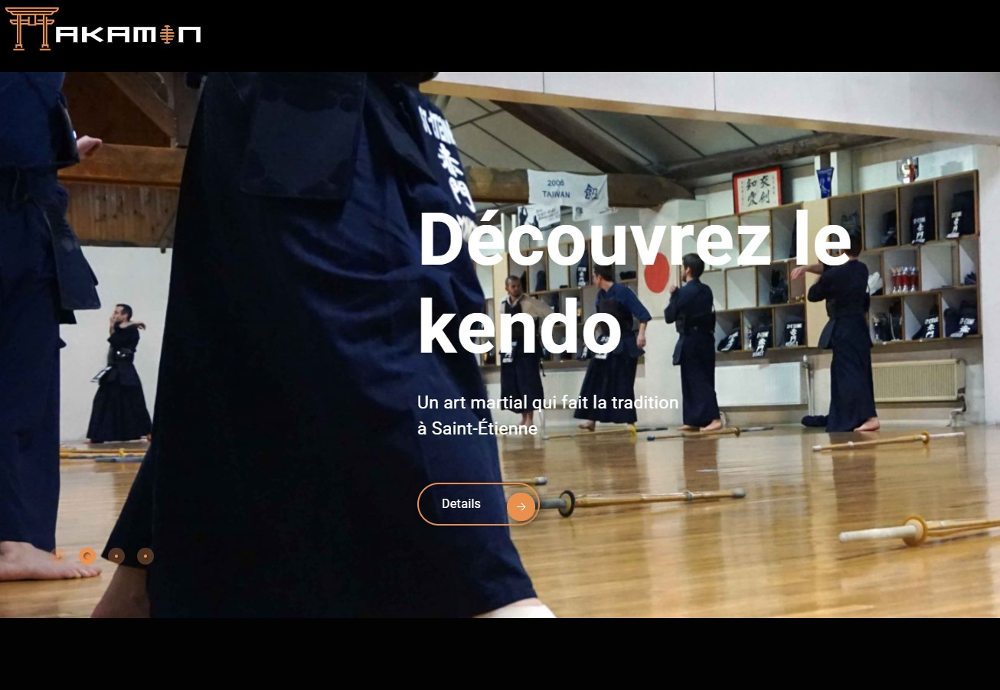
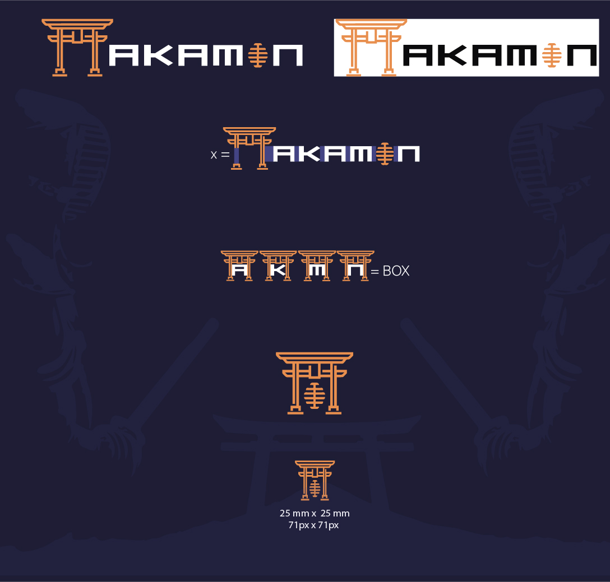
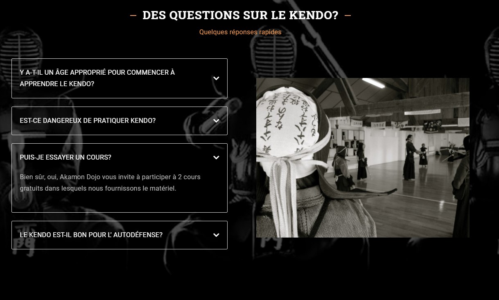

WordPress
Dans ce projet je me suis occupé de la charte graphique, de l'UX, de l'UI, du suivi de la veille technologique et concurrentielle et de la mise en linge en respectant le Cahier de charge convenu avec le client.
Le client a créé une chaîne YouTube où je souhaite publier des vidéos mensuellement, pour ce support de communication j'ai créé une animation du logo afin qu'il puisse être utilisé dans la présentation des vidéos et maintenir un alignement avec la charte graphique du site.
Le site a été créé sous WordPress ce qui facilite la publication et la mise à jour du blog pour le client, une des principales demandes soulevées dans le cahier des charges
